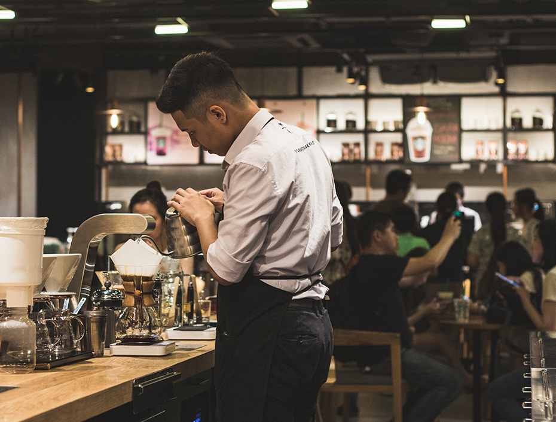
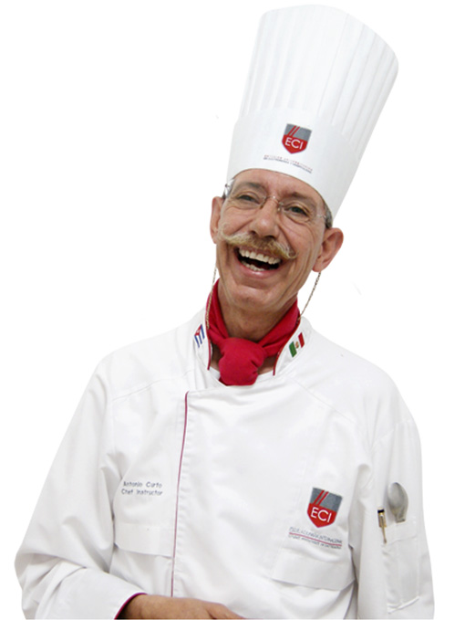

Sobre Nós
Uma Experiência Verdadeiramente Inesquecível
A Casa do Tejo nasceu do amor pela cozinha portuguesa honesta e genuína. Cada prato que sai da nossa cozinha carrega a memória dos sabores de uma infância portuguesa — o cheiro do azeite a aquecer, o travo a salsa fresca, o abraço reconfortante do caldo verde. Trabalhamos com produtores locais e ingredientes sazonais, revisitando a tradição com um olhar contemporâneo que surpreende sem trair.

Conheça os Chefs
A nossa cozinha é liderada por uma equipa apaixonada que acredita que cozinhar é um acto de amor. Com formação nas melhores escolas de gastronomia portuguesa e europeia, cada chef traz uma perspectiva única que, em conjunto, dá vida à identidade gastronómica da Casa do Tejo.
A diversidade de técnicas e influências que a nossa equipa traz resulta numa ementa ao mesmo tempo profundamente portuguesa e surpreendentemente contemporânea. Produtos do rio, do mar e da terra, tratados com o respeito e a criatividade que merecem.

